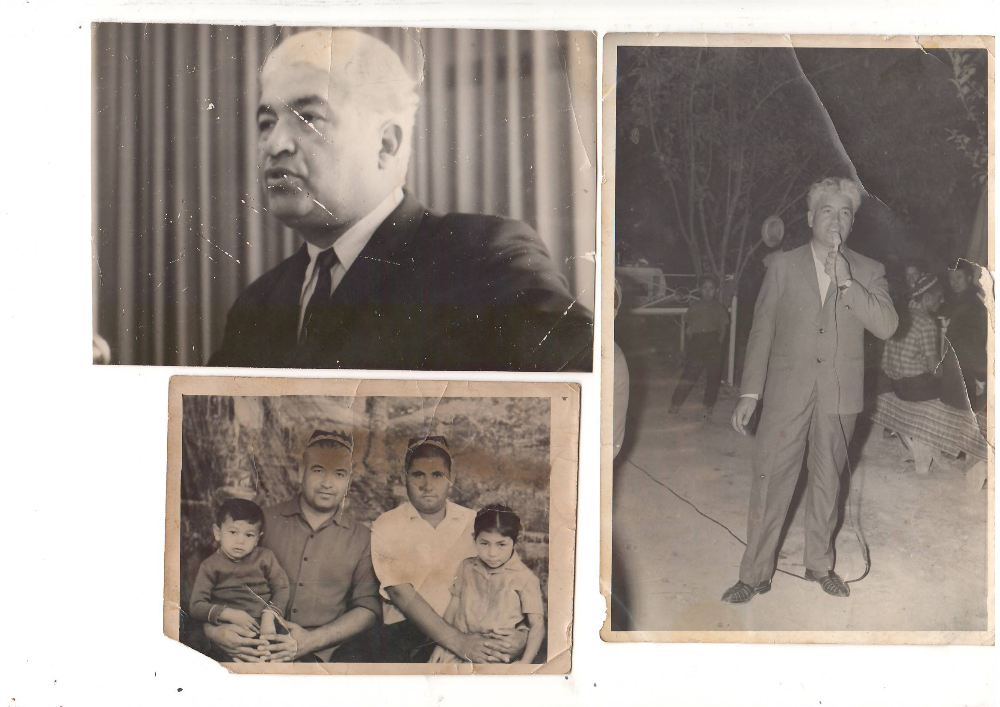

Бу ерда профессор ҳаёти давомида тушган расмлар ва видеороликдан намуналар.

Профессор Зоҳир Ғофуровни охиратлари обод бўлсин.

Минбардан туриб Тошкент аҳолисини Тошкентнинг 2000 йиллиги билан қутламоқдалар.

Неваралар даврасида


Зоҳир Ғофуровни қизлари ҳамда келинлари
Фото суратда Зоҳир ва Матлуба Ғофуровалар
Зоҳир Ғофуровнинг талабалик йиллари.


Расмда аёллари Матлуба Ғофурова.


Тошкент шаҳар олий ўқув юртларида билим олаётган қарши раён ЁШЛАРИ.